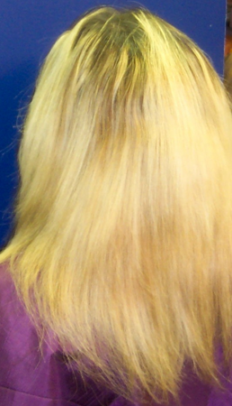
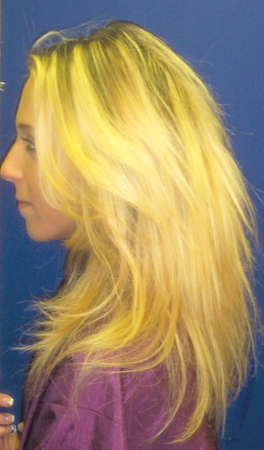

Human Hair Extensions for All Nationalities for 35+ Years
Hair Growth
Jayne's Hair Growth Story
Jayne: I had long thick beautiful hair as a pre-teen. Once I took charge of my own hair around age 14, I got busy bleaching it and toning it. Then one day looking at celebrity hair styles in a magazine, I got the bright idea to cut my hair. Big mistake; after just a few weeks I realized I did not like short hair! I wanted my my hair back.
So, I went to the Internet and found a salon in Marietta that offered hair extensions, they offered no consultation, just scheduled me to have the extensions done. They were very excited about their method. No one explained anything to me, the damage, the fact that I would be getting something called "mono fiber" instead of human hair. No one told me about the up keep either.
After a few days the strands started to fall out. I soon realized my own hair was also still attached to these mono extensions. I was seriously depressed about my hair, until I found Genie.
Genie says: Jayne told me a sad story. She said she had paid over $2000.00 for her extensions and had been paying every week since to replace the fallen strands. To Jayne's surprise she could not use heat on these "mono filament" fusion strands.
When Jayne went back the last time to have them removed, she was told, by the person who put them in, it would cost her nearly as much to remove them as it had cost to put them in in the first place. Jayne said she decided not to go for this. Instead she went back to the Internet, this time she searched for human hair extensions...and that's when she found Genie at LA Hair. Genie offered and scheduled a free consultation.
Genie: During our consultation I discovered Jayne had naturally thick hair. Though, terribly damaged by the fusion, bleaching and over shampooing. Her hair was healthy from the root upto 2-3 inches, the rest was beyond repair. "Cut the damaged hair off and you'll have healthy hair in 9 months to a year," I said.
In the meantime, Jayne could look and feel glamorous every day with the hair of her dreams in a "Sew Real" Hair Enhancement. I had to see her every 6 weeks to assess her progress, evaluate the condition of her scalp, trim her hair in the proper moon phases to accelerate faster hair growth.
Nine Months Later |
One Year Later |
|---|---|
|  |  |
|
Jayne: Genie promised me I could have my own natural hair back within a year. She never lied. The photos above show how short my hair was, and how much it grew in that 1 year time period. Also notice how I looked with my "Sew Real" Hair Enhancements when I left her shop that day with the long beautiful hair of my pre-teen years. I haven't been to Genie in years, but I still tell anyone who wants to re-grow their damaged hair...Go see Genie! This photo shows how much hair I grew in just nine months. |
Jayne: And this picture shows how much hair I grew in just one year! Yes, I send Genie referrals all the time, and everyone I send loves her work. I no longer need hair enhancements. Because I have my own thick, natural hair back. I will never use glue or adhesives or decide on a whim to cut my own beautiful hair off again, and if I do, I know where to go. Thank God for Genie! |